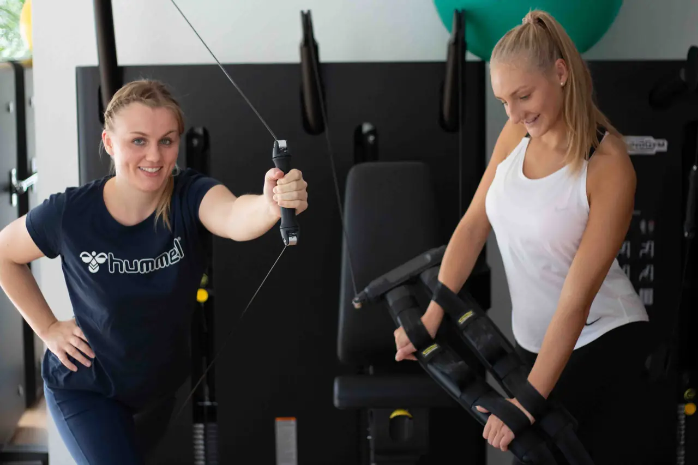
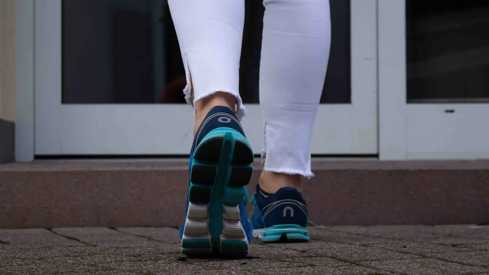

Unsere Praxis in Ispringen
Das ganze Untergeschoss in der Bahnhofstraße 4: fünf Behandlungsräume, ein Trainingstherapieraum und ein Gerätetherapieraum. Weitere Behandlungsräume liegen im Buchenweg 37.
Therapie, Training, Prävention
Michaela Grosse hat ihre Praxis 1996 gegründet, seit 2007 ist sie in der Bahnhofstraße. Ihr Konzept: Wer zu uns zur Therapie kommt, soll danach fit bleiben können. Deshalb gibt es neben der klassischen Physiotherapie ergänzende Behandlungen und mit Gesundheits-PLUS Kurse und Gerätetraining.
Die Räume sind hell und großzügig. In vier Behandlungsräumen steht ein Schlingentisch, im großen Trainingstherapieraum üben wir Gangschule, Gleichgewicht und Koordination.
Ausstattung
- Technogym-Geräte und Kinesis-Stationen
- Zertifizierte Ausstattung für Krankengymnastik am Gerät
- Vier Schlingentische
- TRX, Kettlebells, Bosu, Sprossenwand
- Praxisauto und mobile Liege für Hausbesuche
- 4 Parkplätze im Hof



Barrierearm
Die Praxis ist barrierearm, am Eingang gibt es nur eine kleine Stufe. Brauchen Sie dabei Hilfe, rufen Sie vor Ihrem Termin an – wir holen Sie am Eingang ab.
Anfahrt und Parken